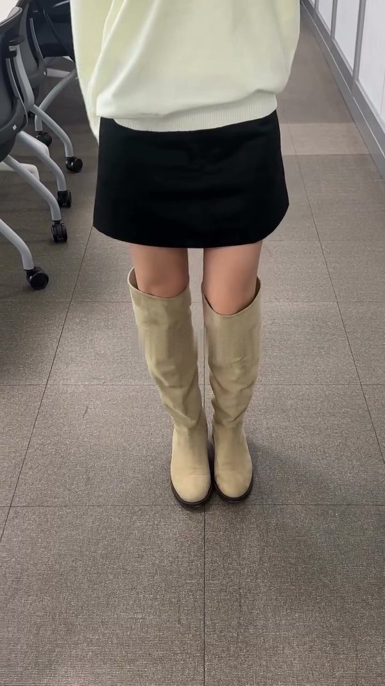

풀문 촬영 정본 (내부용)
먼저 아래 시작 방식에서 기본안을 정한다. 선택한 첫 10초의 순서를 개인 가이드에 넣고, 10초 이후는 필수 장면 안에서 순서를 조절한다. 일반 풀문은 첫 장면 바로 다음에 굽 집기 + 단면을 넣는다.
촬영 제품
 풀문키높이 퍼안감 방한 부츠 · 굽 7cm
풀문키높이 퍼안감 방한 부츠 · 굽 7cm시작 방식을 고르면, 다음 장면까지 정해진다
아래 네 가지는 촬영·비교할 기본안이다. 썸네일은 첫 장면에서 고른다. 원본에 없던 굽·단면을 연결한 순서와 초수는 제작 제안이며, 성공 순위가 아니다.
기존 하반신 높이 비교도 선택할 수 있다
한쪽은 부츠·한쪽은 양말, 허리 아래를 옆에서 가까이 담는다. 첫 2초 뒤 굽·단면으로 연결한다. 자사 반복 영상에서 구매가 확인된 구도지만, 이번 20초 순서 전체의 성과가 검증된 것은 아니다. 자사 구매 성과와 원본 확인 →
기본안과 크리에이터 제안을 고르는 기준
기본안을 먼저 보여준다. 해당 계정의 공유·저장이 확인된 다른 시작이 있다면 원본·구간·구도·말투를 붙여 대안으로 비교한다. ‘본인 스타일대로’ 한 줄로 맡기지 않는다. 랭킹은 그 형식으로 반응이 나온 계정에만 넣는다.
기본안과 대안을 비교할 때 상품·제안·후속 장면을 최대한 맞추고 먼저 시작 방식만 바꾼다. 조회·공유·저장, 확보 가능한 첫 3초·10초 도달, 광고 집행 시 Meta 구매를 따로 본다. 단면의 유무·위치 효과는 별도 시험 항목이다.
손으로 굽을 집고, 단면 보여주기
고정 필수. 첫 장면 바로 다음에 넣는다.
굽 집기신발을 들고 손가락으로 굽을 집어 가리킨다. 가까이서 찍는다.
단면 보여주기이어서 잘린 면(단면)을 화면 가운데 크게 보여준다.
화면 글자서울 마포구 양화로 125 5층 착한구두
받는 분 콘텐츠기획 · 010-5595-5342
단면 샘플이 촬영 날까지 없으면 아래 단면 사진을 2초 넣는다.

4–10초는 선택한 기본안의 착화 구도로 잇는다


위에서 고른 순서대로. 정면·옆면·거울·내려다보기 중 선택한 두 구도를 연결한다. 같은 화면에서 발만 움직인 캡처를 여러 구도처럼 늘리지 않는다.
아래 정면·옆면은 기존 촬영 예시다. 고른 기본안에 필요한 구도만 사용한다. 서 있는 전신 다음에는 손·제품 근접, 가까운 착화 다음에는 다른 높이나 거리의 구도로 화면 범위를 바꾼다.


필수 착화 장면을 채우고, 나머지는 짧게
신발이 예쁘게 보이는 코디 한 벌을 기준으로 앞코·옆면과 굽·다리와 신발이 함께 보이는 모습을 확보한다. 첫 10초에 이미 보여준 구도를 무조건 반복하지 않는다. 아래 3초는 촬영 원본 확보 길이 예시이며 편집마다 전부 3초씩 쓰라는 뜻은 아니다.
앞에서 3초정면, 부츠 끝까지 나오게.
옆에서 3초굽과 밑창이 보이게.
거울로 3초전신 거울에 비친 허리 아래, 부츠가 가운데. 걷는 모습도 가능.
다른 옷을 더 보여줄 경우 착장마다 1~3초로 빠르게 넘긴다.
댓글 안내로 끝낸다
부츠를 신고 서 있는 모습을 3초 찍는다. 얼굴이 나와도 된다.
화면 자막은 필수가 아니다. 댓글 유도는 화면 자막 또는 고정 댓글 중 하나면 된다.
자막으로 넣을 때링크 보내드릴게요
○○는 개인 가이드에 적은 댓글 키워드로 바꾼다. 글꼴·색은 자유.
넣지 않는 것
신발이 작거나 가려지는 화면 — 전신 자체를 금지하지 않는다. 첫 화면에서도 신발의 형태가 보이게 거리와 하의 길이를 맞춘다. 얼굴+신발 안은 얼굴만 오래 보여주지 않는다.
상자 열기·포장 뜯기는 빼고, 선택한 시작 장면으로 바로 들어간다.
가방·옷이 신발을 가리지 않게 한다. 원본보다 어둡거나 배경이 산만하면 촬영 위치를 바꾸고 테스트 컷부터 확인한다.
본품 자르기 — 보낸 본품은 자르거나 안창을 빼지 않는다.
다른 신발 브랜드 이름·로고·상자, 유명인 이름, 저작권 음원은 넣지 않는다. 음악은 별도 안내가 없으면 생략 가능.
촬영 전 준비
준비물 · 촬영 전 연락
- 색상·사이즈를 받는다.
- 폰 받침대나 삼각대, 양말, 부츠가 잘 보이는 코디 한 벌을 준비하게 한다.
- 어떻게 찍을지 글 몇 줄이나 말로 먼저 받는다. 본인 기획안 양식도 가능. 확인 답변 후 촬영하게 한다.
- 초안 전달 날짜·게시 날짜·댓글 키워드를 확인한다.
- 선택한 기본안·원본 구간·첫 10초 순서·확정 가격·첫 장면 테스트 컷을 한 묶음으로 확인한다.
- 게시 시 @chaakan_kr 공동작업자 초대 가능 여부와 필요한 성과 확인 방법을 협의 내용에 적는다.
연락은 개인 가이드를 보낸 메일이나 대화방으로 받는다.